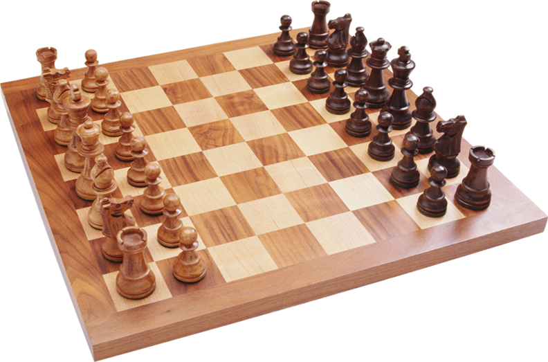

Šah
Šah se igra na kvadratnoj tabli sa osam redova (označenih sa brojevima od 1 do 8) i osam kolona (označenih latiničnim slovima a do h). Bela i crna boja šezdeset i četiri polja se naizmenično menjaju, a zovu se još i „svetla“ i „tamna“ polja. Šahovska tabla se tako postavlja da je svakom igraču belo polje u donjem desnom uglu, a figure se postavljaju kao što je prikazano na slici, tako da je svaka kraljica na polju iste boje kao i ona.

Svaki igrač počinje igru sa 16 figura: figure svakog od igrača se sastoje od jednog kralja, jedne kraljice, dva topa, dva lovca, dva konja i osam piona. Jedan igrač, koji se zove još i „beli“ upravlja belim figurama, a drugi igrač, „crni“, upravlja crnim figurama; beli uvek igra prvi. Boje se odabiraju ili prijateljskim dogovorom, na sreću ili ih odabira režiser turnira. Igrači naizmenično igraju pomerajući po jednu figuru (sa izuzetkom rokade, kada se dve figure pomeraju odjednom). Figure se ili pomeraju na slobodno polje, ili na polje koje zauzima protivnička figura i tad je ta figura uzeta i uklanja se iz igre. Sa izuzetkom an pasana, sve figure jedu protivničke figure pomerajući se na polje koje zauzima protivnička figura.
Kralj
Kada se kralja nalazi pod direktnim napadom jedne (ili može i dve) protivničke figure, kaže se da je igrač u šahu. Kada je u šahu, igraču su dozvoljeni samo oni potezi koji izvlače kralja iz šaha. Igrač takođe ne sme da napravi nijedan potez da svog kralja dovede u šah. Cilj igre je šah-matirati protivnika; ovo se dešava kada je kralj u šahu, a ne postoji nijedan potez koji kralja izvlači iz protivničkog napada.
Kralj se može pomerati jedno polje vodoravno, uspravno ili dijagonalno. Jednom za vreme igre, svaki kralj ima pravo da izvrši specijalni dupli potez, rokadu. Rokada se sastoji od pomeranja kralja dva polja prema topu, a zatim pomeranje topa na polje koje je kralj preskočio. Rokada je moguća samo ako su zadovoljeni sledeći uslovi:
- Igrač nije pre rokade pomerao ni kralja ni topa sa kojim se vrši rokada.
- Između kralja i topa ne postoji nijedna figura.
- Kralj ne sme biti pod šahom, niti sme da prođe kroz polja koja su pod napadom protivnika. Kao i sa ostalim potezima, rokada ne može da se obavi ako bi time kralj ušao u šah.
- Kralj i top moraju biti na istom redu (da se isključi mogućnost rokade izvedenim pionom).
Top
Top se može pomerati bilo koji broj slobodnih polja vodoravno ili uspravno (takođe je uključen i kraljev specijalni potez rokade).
Lovac
Lovac se može pomerati bilo koji broj slobodnih polja dijagonalno. Primetite da lovac nikad ne menja boju polja na kome stoji, pa igrači govore često o „belom“ i „crnom“ lovcu.
Kraljica
Kraljica se može pomerati bilo koji broj slobodnih polja vodoravno, uspravno ili dijagonalno.
Konj
Konj može da preskače zauzeta polja i pomera se dva polja vodoravno i jedno polje uspravno ili obrnuto, praveći tako „L“ oblik. Konj na sredini table ima osam polja na koja može da se pomeri. Primetite da svaki put kada se konj pomeri, menja boju polja na kome stoji.
Pioni
Pioni imaju najsloženija pravila kretanja: Pion se može pokretati samo jedno polje napred ako to polje nije zauzeto. Ako se pion do tad nije pomerao, moguće je i da se pomeri dva polja napred ako su oba polja ispred njega slobodna. Pion se ne može kretati unazad. Ako se pion prvi put pomeri dva polja i posle odigranog poteza se nalazi pored protivničkog piona, protivnik može da jede „an pasan“ tog piona, kao da se prvi pešak kretao samo jedno polje napred. Pioni su jedine figure koje jedu drugačije od kretanja. Pioni mogu da pojedu protivničku figuru samo na dva dijalognalna polja ispred njih, ali se ne mogu pomeriti na ova polja ukoliko na njima nema protivničke figure. Ako pion dođe do poslednjeg reda, onda se pretvara (promoviše) u kraljicu, topa, lovca ili konja iste boje. U praksi se pešaci gotovo uvek pretvaraju u kraljicu.
Preostala pravila kretanja
Sa izuzetkom konja, figure ne mogu preskakati jedne preko drugih. Figure iste boje („prijateljske figure“) se ne mogu preskočiti ako su u liniji kretanja, i prijateljska figura ne može da zameni drugu prijateljsku figuru. Protivničke figure isto ne mogu da se preskoče, ali mogu da se „pojedu“. Kada se figura pojede (ili uzme), napadačka figura staje na polje koje je zauzimala pojedena figura (an pasan je jedini izuzetak). Pojedena figura se uklanja iz igre i ne može se više vratiti u igru. Kralj se ne može pojesti, može se samo dovesti u šah. Ako igrač ne može da izvuče kralja iz šaha, dolazi do mata, i igra je izgubljena. Šahovske igre ne moraju da se završe matom — bilo koji od igrača može predati partiju ako pozicija deluje izgubljeno. Igre se takođe mogu završiti i remijem (nerešeno). Remi može nastati iz više situacija, uključujući i sporazumni remi, pat, pravilom tri ponavljanja, pravilom pedeset poteza ili remi nemogućnošću da bilo koji igrač matira (obično jer nema dovoljno materijala da se napravi mat).
Vremenski ograničene igre
Igre se mogu igrati i sa vremenskim ograničenjem postavljanjem vremena za igru pri pravljenju nove igre. U vremenski ograničenim igrama svaki igrač ima određeno vreme za potez, a vreme se smanjuje samo dok je igrač na potezu.
Remiziranje
Ovo je igra koja se završava bez pobede za ijednog igrača. Većina nerešenih igara nastaje sporazumnim remijem. Drugi načini da se igra završi remijem su pat, pravilo tri ponavljanja, pravilo pedeset poteza i nedovoljan materijal za mat. Za poziciju se kaže da je remi (ili remi pozicija) ako bilo koji igrač može, pravilno igrajući, kad-tad naterati igru u poziciju kada se igra mora završiti remijem, bez obzira na poteze drugog igrača.
Pat
Pat je pozicija u kojoj igrač koji je na potezu ne može da odigra nijedan ispravan potez, a kralj mu nije u šahu. Pat prouzrokuje trenutni remi.
Pravilo tri ponavljanja
Igra je remizirana ako se ista pozicija pojavi tri puta, a na potezu je isti igrač, a svaki igrač ima isti skup mogućih poteza svaki put (ovo drugo uključuje i pravo da se uzme an pasan i pravo na rokadu).
Pravilo pedeset poteza
Pravilo pedeset poteza kaže da se igra završava remijem ako posle pedeset poteza nije pomeren nijedan pion ili nije pojedena nijedna figura.
Nedovoljno materijala za pobedu
Ovo je scenario u kome su pojedeni svi pioni, pri čemu jedna strana ima samo kralja, a druga strana ima jednog kralja plus jednog konja ili jednog lovca. Ovakva pozicija je remi jer je nemoguće da dominantna strana matira bez obzira na poteze koje igra. Situacije u kojima je mat moguć samo ako lošija strana greši su pokrivene pravilom pedeset poteza.